Available Equipments
Upper Body Equips:
1.Dumbbells2.Dip Station
3.Battle Ropes4.Inclined Bench Press
5.Pec Deck Machine6.Lat Pull Down Machine
7.Preacher Bench8.Tricep bars
Lower Body Equips:
1.Plyo Boxes2.Calf Machine
3.Stair Stepper4.Ankle Weights
5.reverse Hyper6.Leg Curl Machine
7.Hack Squat Machine8.Air Resistence Exercise Bike
Full Body Equips:
1.Spin Bike2.Mini-Trampoline
3.Suspension Trainer4.Vibration Plate
5.Treadmill6.Ab Coaster
7.Inversion Table8.Smith Machine
Available Trainers
Sharathy.A
Saravanan.R
Ramesh.K
Rakesh.H
Aravindh.G
Sasi Kumar.J
|
Available Equipments
Upper Body Equipments
1.Dumbbells
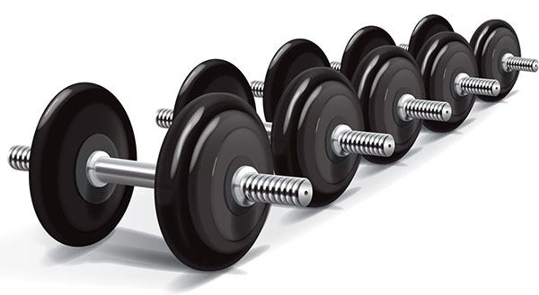
An essential piece of equipment in weight training with a bar and weights attached at each end.
You can change the weight plates in certain dumbbells for greater versatility.
The tech of dumbbells has grown and now we even have adjustable varieties that do away with having to need a rack full of dumbbells.
2.Dip Station
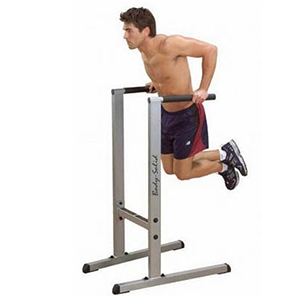
An incredibly effective piece of equipment on which you can you can perform a variety of exercises.
It has 2 arms and a large base which increases stability and prevents it from toppling over.
A dip bar or station is one of the best options for increased upper body muscularity.
3.Battle Ropes
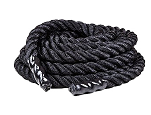
Battle ropes give you full body strength training, enhances your fatigue
resistance and helps your twitch muscles. It has become a mainstream feature
in gym these days and adds an element of cardio to resistance workouts.
You can add battle ropes to plenty of regular exercises like burpee slams,
single arm plank waves, double wave/ jump squat combos and the like.
4.Inclined Bench Press
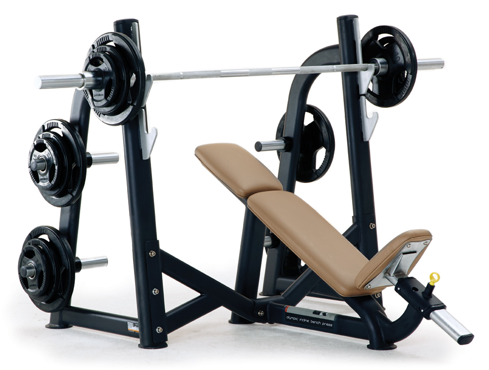
The inclined bench press is a variation of the bench press,
using which you can perform strength training exercises at an elevated height.
The shoulders and upper chest area can be targeted.
Incline bench presses develop your upper chest musculature while also being a
bit more joint-friendly than the other variations.
5.Pec Deck Machine
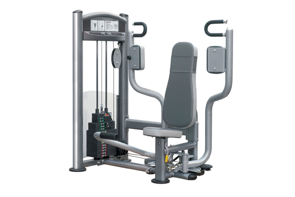
The best machine to isolate your pectoral muscles and give
them a good workout. You can perform many exercises such as chest flys, butterfly, etc.
using a pec deck machine.This machines is particularly beneficial to build chest and shoulder
muscles, and also enhance arms strength and stability. The upper body muscles are squeezed
together, causing the pectoralis major to expand and contract.
This is what builds the muscle and also toughens the tissue fibers.
When the exercise on this machine is done with appropriate weights,
it does prove to be quite effective.
6.Lat PullDown Machine
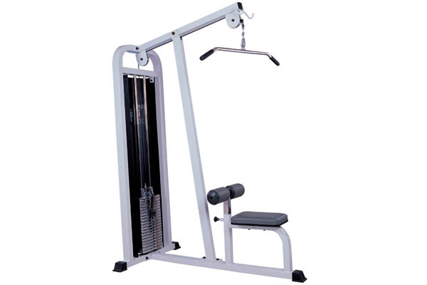
The lat pulldown machine is a strength training device with a padded seat,
thigh support and a long bar hanging from an upper rod. You can work your lats using this
machine.If you are not able to handle pull-ups, this could be a good alternative.
You can vary your grips on the pull-down rod to work with different parts of your upper body.
7.Preacher Bench
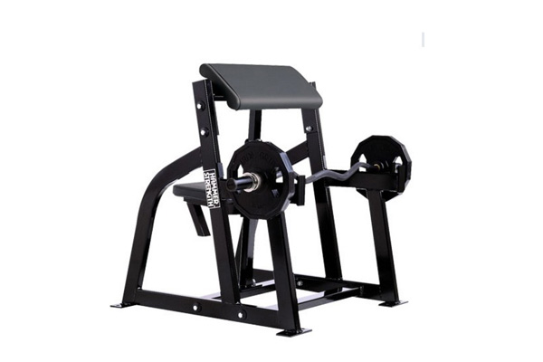
The ideal machine to build your biceps. You can increase
muscle mass by lifting the barbell up and down. The machine has an elbow
budding, a bar rest, and a seat.Using a preacher bench is a great way to target
your biceps without putting pressure on your wrists. Another way to use this device
is with a reverse grip to target the forearms.
8.Tricep Bars
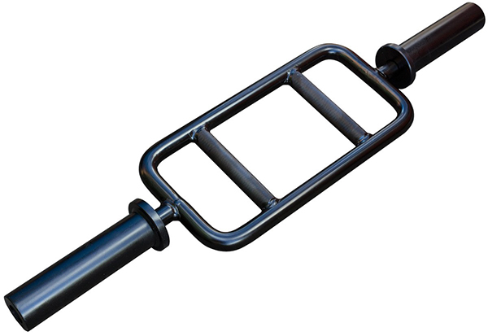
If you are looking to work your triceps, then this is the
specialized bar you need. When you use a barbell, there are limits on how
much you can do and the grip is restricted as well. This bar will let you
get a comfortable grip as well as perform tricep focused movement with ease.
A tricep bar not just gives your triceps a good workout but you can also use it
for hammer curls or front raises which target the bicep and deltoids respectively.
Go to Full Body Equipments
Lower Body Equipments
1.Plyo Boxes
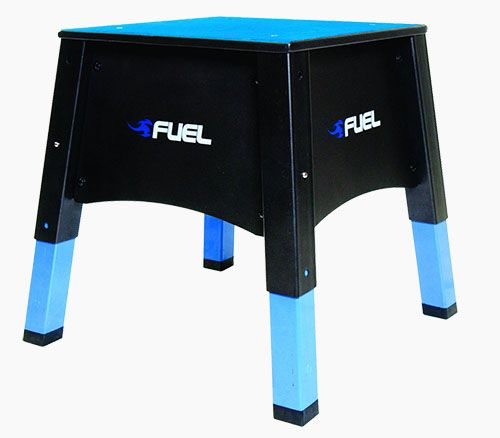
It’s a solid box/construct on which you can perform a variety
of movements that can recruit several muscle groups at one time. You can do box
jumps, burpees, pistol squats, jackknifes, elevated crunches, decline side planks,
and many more types of exercise.A plyo box when used properly can increase your
vertical jump height in a few sessions.
2.Calf Machine
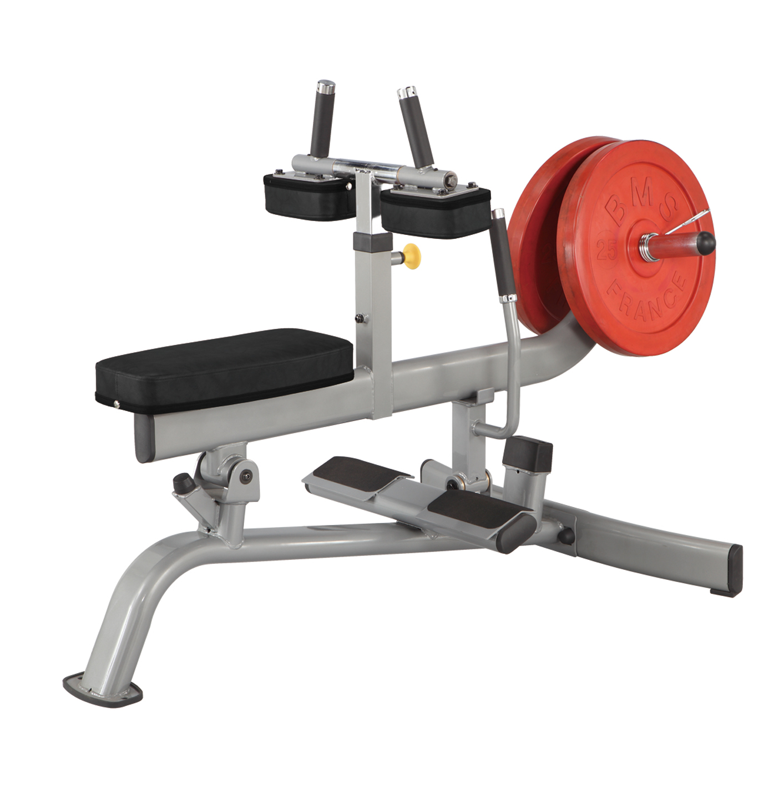
The calf machine can isolate the soleus muscles of the calves and give it a good workout.
Your calves get a more muscular appearance when you work the soleus muscles.
This machine is basically used to do seated calf raises. Weights can be varied and
the frequency depends on the person. A lot of athletes and people who require extensive
legwork prefer to use calf machines to strengthen their lower legs and also increase speed and agility.
3.Stair Stepper
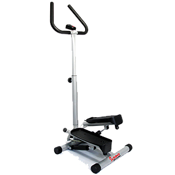
This is an inexpensive machine which can simulate climbing stairs which
is considered a really good cardio workout.While the stair stepper may be
an older machine compared to the newfangled pieces of equipment available,
it can still give you that lower body burn.
4.Ankle Weights
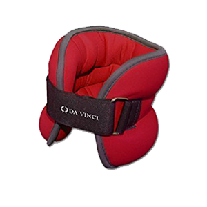
A well-cushioned weight-bracelet for your ankle which is used to add
resistance to your exercises.This is a very useful and portable method
to add more to your resistance to your morning walks or jogging routine.
5.Reverse Hyper
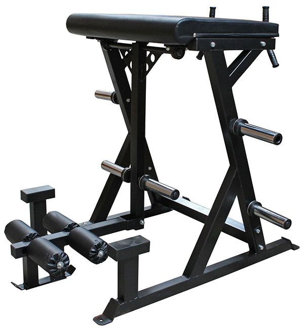
The reverse hyperextension combines strengthening and rehab into one effective
machine. The spine is gently stretched and the lumbar area is strengthened.
This is definitely one of the best therapeutic machines for the back.
One of the major reason for putting your back out is during heavy lifting or squatting.
6.Leg Curl Machine
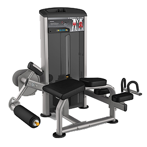
The ideal machine for toning your quadriceps is the leg extension machine.
You will have to sit on the machine with your legs under the pads and lift
weights using your quadriceps.A lot of people have gone past leg extensions
to compound exercises, but they still find them useful in certain situations.
7.Hack Squat Machine
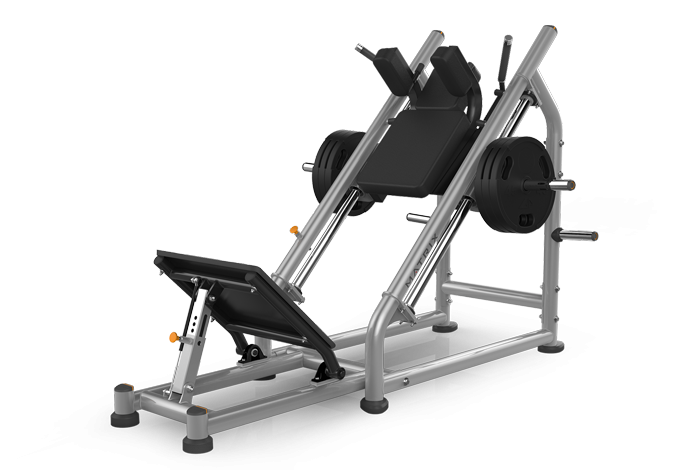
Another fitness device that can give your legs a good workout.
It is essentially a combination of leg press and squat machines.
It works your quadriceps in a much more efficient way.
This along with a leg press machine can help develop your lower body
especially the thighs and calf sections. Find our review of hack squat and leg press machines.
8.Air Resistence Exercise Bike
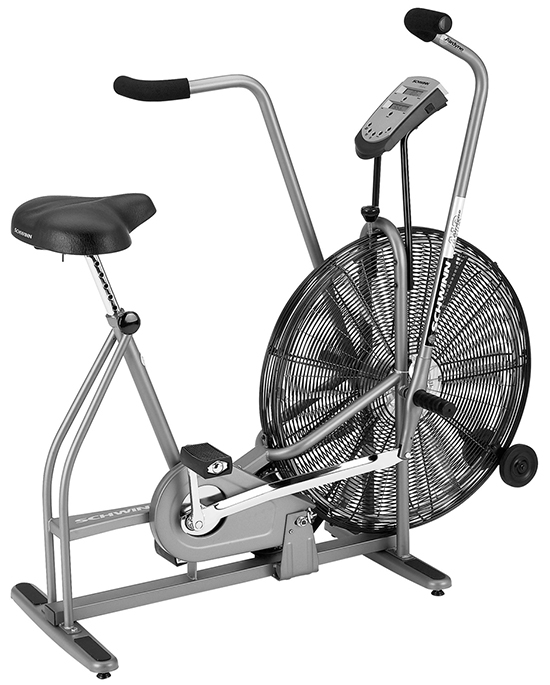
An exercise bike with a twist, the air resistance bike uses exponential
resistive force generated by air to give you a thorough cardio workout.
One of the most grueling pieces of kit in the gym, an Assault AirBike can
really turn the screws when it comes to pushing your limits.
Go to Upper Body Equipments
Full Body Equipments
1.Spin Bike
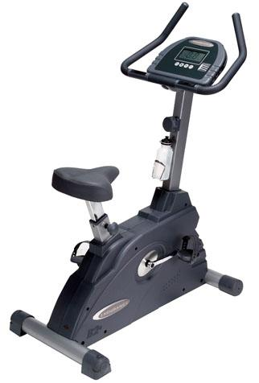
A spin bike delivers an effective indoor workout. These bikes come with
a heavyweight flywheel and cycling shoe compatibility. They also come with
varying resistance levels to adjust the intensity level of the workout.
Spin bikes are growing in popularity as they are an excellent way to burn calories
by sweating it out. It is important not to overdo it and choose the right bike
for your needs from the numerous options available.
2.Mini Trampoline
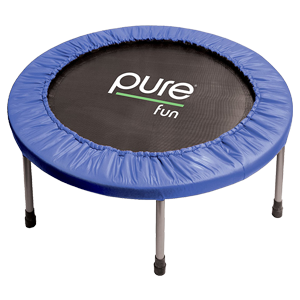
A fun little piece of equipment which you can use to strengthen your body,
hone your balance and increase aerial body control.There is nothing more fun
than bouncing around on your own trampoline while improving your balance and
your fitness levels. Doing this early in the morning can jumpstart your
metabolism and you’ll feel refreshed.
3.Suspension Trainer
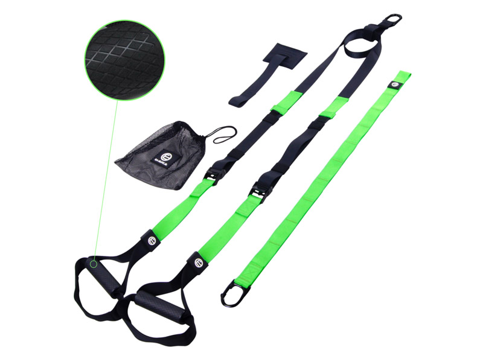
It consists of several nylon bands and plastic buckles and is used to leverage
your body against gravity to create resistance. Using a suspension trainer,
you can perform hundreds of different exercise movements which work on various parts of the body.
This was an idea by a US navy seal to come up with TRX range of suspension trainers.
All you needed with this training equipment was anchor and gravity, both of which are accessible anytime.
4.Vibration Plate
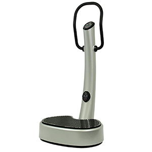
The machine looks like a weighing machine with handles but it has a base
that vibrates at varying frequencies so people get a low-impact workout without
the physical exertion normally associated with regular exercises.
Vibration plates work on the principle of muscle resonance, the frequency at which
your muscles begin to vibrate, activating it and boosting your ability to exercise.
5.Treadmill
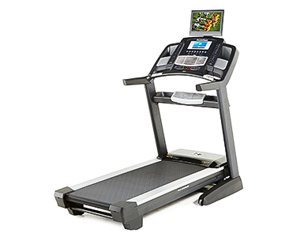
When you think of cardio workouts, treadmills are the first to come to mind.
They are used to help you achieve a walking or running motion while staying
in one place. Using a treadmill regularly can help you lose weight and build strength.
Purchasing a treadmill can be quite and investment as these tend to be expensive.
6.Ab Coaster
 The Ab coaster machine works your abs from the bottom up, by targeting
those hard to reach ab muscles. It can maximize your core workout by working your abdominal muscles.
Definitely enhances regular floor ab exercises and is more effective on working on
the whole ab muscle, from bottom to top. It works especially on the abdominal
muscles and creates core strength in weaker portions of the abs.
The Ab coaster machine works your abs from the bottom up, by targeting
those hard to reach ab muscles. It can maximize your core workout by working your abdominal muscles.
Definitely enhances regular floor ab exercises and is more effective on working on
the whole ab muscle, from bottom to top. It works especially on the abdominal
muscles and creates core strength in weaker portions of the abs.
7.Inversion Table
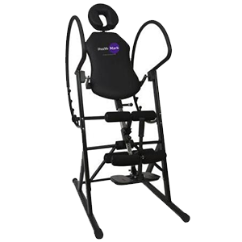
Inversion tables are specialized pieces of equipment that are mostly
used for therapeutic purposes. It relies on the effect of gravity to
pull and decompress joints of your body that are below the anchor.
This effect stretches out your body and you can adjust being at a
small angle or fully vertical.
8.Smith Machine
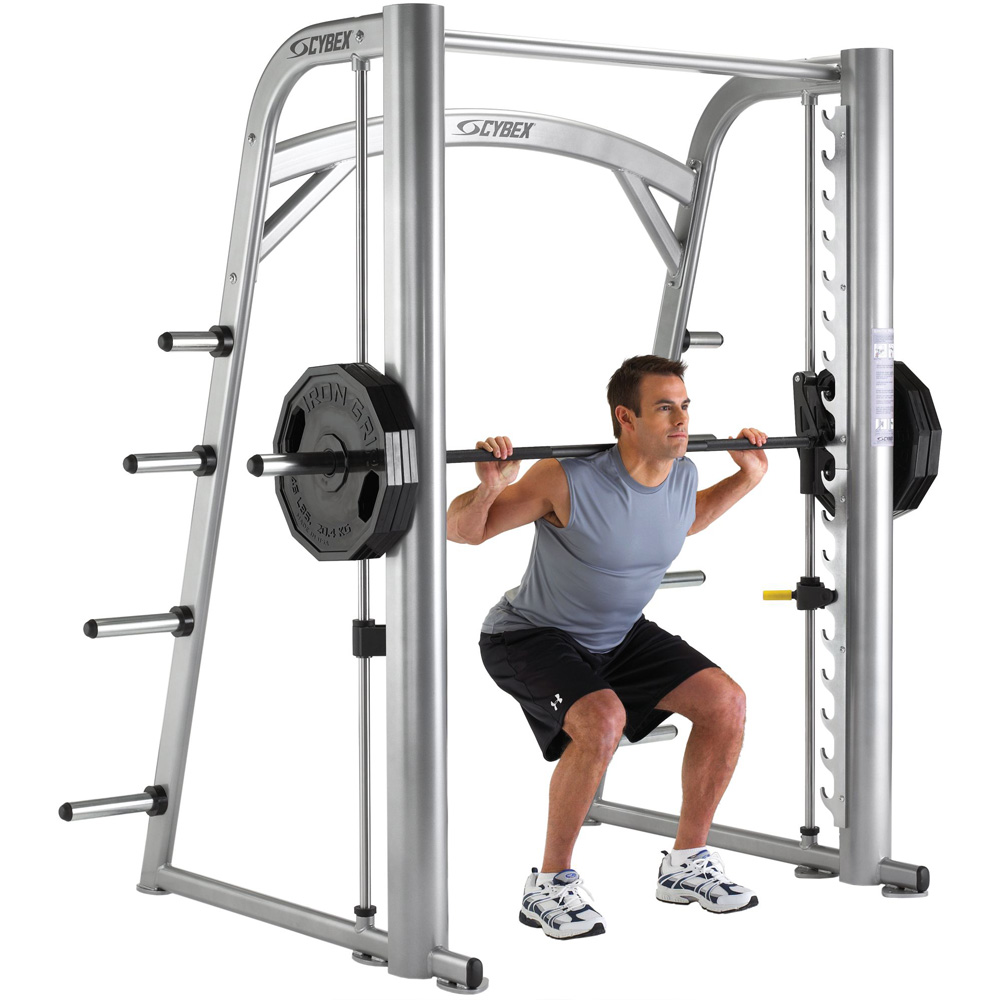
A weight training machine which will assist you in lifting weights
and in performing squats. The machine has a barbell which is fixed
within steel rails allowing vertical movements.
This is a great piece of equipment for intermediate and advanced lifters.
But it is important to understand its limitations and use it accordingly.
Go to Lower Body Equips:
Available Trainers
1.Sharathy.A B.Sc(Physical Fitness)
Experience: 4 years as Trainer
Accomplishment: 2 times Mr.Madurai Award Winner
Contact No:9456789123
Mail Id:sharathy34@gmail.com
2.Saravanan.R M.Sc(Food and Nutrition)
Experience: 3 years as Dietician(IDA Certified)
Contact No:9856791034
Mail Id:saravanan74@gmail.com
3.Ramesh.K M.Sc(Food Technology)
Retired IFD officer
Dietician
Contact No:9876123562
Mail Id:ramesh56@gmail.com
4.Rakesh.H M.Sc(Physical Fitness)
Trainer and Physiotherapist
Contact No:9875678231
Mail Id:rakeshh201@gmail.com
5.Aravindh.G B.Sc(Physiotherapy and Psychology)
Trainer and Motivationalist
Contact No:9678932414
Mail Id:aravindhera12@gmail.com
6.Sasi Kumar.J MD(Physician)
Emergency Doctor
Contact No:9876442145
Mail Id:sasikumarj4527@gmail.com
|